JIC MSc Workshop: Analysis Walkthrough
George Savva
March 2022
1 Motivation
We have an Excel spreadsheet with data corresponding to a rehabilitation intervention for stroke patients.
Hospital patients were recruited from five hospital departments and were randomised to either standard care or an experimental treatment. The time they took to complete a walking speed task was recorded as the outcome.
The dataset is here walkingspeed.xlsx:
Here we report an analysis of this dataset.
We will answer the following questions:
- What is the mean and standard deviation of walking speed in each treatment group?
- Does the treatment improve walking speed?
- Is the treatment effect different between men and women?
Our workflow is typical of most staistical analyses:
- Load data
- Wrangle
- Describe
- Visualise
- Clean and recode
- Test and model
- Report
2 Load libraries
library(ggplot2)
library(dplyr)
library(data.table)
library(readxl)3 Load data
We should inspect the data in Excel. Note there are three sheets that we need to combine. We need to lead
treated <- read_excel(path="walkingspeed.xlsx",
sheet = "treated",
range = "A1:B68")Notes: * The library readxl for reading Excel sheets. There are alternatives but I find this works well. * Multiline function call * Named arguments * Assigning the outcome to the variable * Help file, how did we know how this function worked.
We need to load all three sheets as separate data frames.
control <- read_excel(path="walkingspeed.xlsx",
sheet = "control",
range = "A1:B70")
metadata <- read_excel(path="walkingspeed.xlsx",
sheet = "meta",
range = "A1:D139")4 Explore data
R includes several functions to inspect data
class(treated)## [1] "tbl_df" "tbl" "data.frame"str(treated)## tibble [67 x 2] (S3: tbl_df/tbl/data.frame)
## $ patid: num [1:67] 1 3 5 7 9 11 13 15 17 19 ...
## $ time : chr [1:67] "1.8975120000000001" "2.927432" "2.2042579999999998" "2.1441910000000002" ...summary(treated)## patid time
## Min. : 1 Length:67
## 1st Qu.: 34 Class :character
## Median : 67 Mode :character
## Mean : 67
## 3rd Qu.:100
## Max. :133head(treated)## # A tibble: 6 x 2
## patid time
## <dbl> <chr>
## 1 1 1.8975120000000001
## 2 3 2.927432
## 3 5 2.2042579999999998
## 4 7 2.1441910000000002
## 5 9 1.7203250000000001
## 6 11 2.1476410000000001# View(treated)
str(control)## tibble [69 x 2] (S3: tbl_df/tbl/data.frame)
## $ patid : num [1:69] 2 4 6 8 10 12 14 16 18 20 ...
## $ walktime: num [1:69] 3.54 1.82 3.04 2.47 2.48 ...Notes: * Data can be numeric, character strings, (factors or logical)
5 Access elements from the dataframe
control$walktime## [1] 3.537158 1.819787 3.038065 2.469580 2.483921 2.440482 2.779616 3.739146 1.956132 5.415308 3.067604
## [12] 185.362000 2.690378 0.015400 2.716427 1.952741 2.707647 5.056214 3.319593 1.493927 2.654815 2.856972
## [23] 2.401613 1.714169 3.183433 2.897221 10.590513 2.572139 2.380559 3.528461 12.168967 2.274398 2.631071
## [34] 2.524958 2.191847 3.943916 3.390101 5.146895 2.426002 3.340182 2.392610 2.375177 2.210679 3.344224
## [45] 2.233431 2.749903 3.361010 2.803598 4.499523 3.642821 2.225054 2.318357 2.241562 2.498969 2.378422
## [56] 2.370767 2.169139 2.373494 2.959015 3.881843 2.296210 3.075860 5.033359 2.870730 3.980520 2.290122
## [67] 1.843314 2.083927 2.778637control$walktime[1]## [1] 3.537158control$walktime[1:10]## [1] 3.537158 1.819787 3.038065 2.469580 2.483921 2.440482 2.779616 3.739146 1.956132 5.415308mean(control$walktime)## [1] 5.712487mean(control$walktime[1:5])## [1] 2.669702log(control$walktime)## [1] 1.2633236 0.5987195 1.1112208 0.9040481 0.9098384 0.8921956 1.0223128 1.3188572 0.6709691 1.6892298 1.1208968
## [12] 5.2223107 0.9896817 -4.1733878 0.9993174 0.6692340 0.9960800 1.6206180 1.1998422 0.4014082 0.9763750 1.0497623
## [23] 0.8761406 0.5389284 1.1579602 1.0637520 2.3599586 0.9447378 0.8673353 1.2608618 2.4988890 0.8217154 0.9673910
## [34] 0.9262244 0.7847446 1.3721741 1.2208597 1.6383936 0.8862446 1.2060253 0.8723848 0.8650720 0.7932997 1.2072347
## [45] 0.8035390 1.0115656 1.2122415 1.0309036 1.5039714 1.2927584 0.7997812 0.8408587 0.8071729 0.9158782 0.8664372
## [56] 0.8632135 0.7743303 0.8643631 1.0848564 1.3563100 0.8312599 1.1235845 1.6160876 1.0545664 1.3814125 0.8286051
## [67] 0.6115650 0.7342541 1.0219605log(control$walktime[1:5])## [1] 1.2633236 0.5987195 1.1112208 0.9040481 0.90983846 Wrangle
For analysis we will need all the data into one data frame. We need to append (row bind) the treatment and control results, then merge (join) the meta data.
# Remind ourselves of the structure of the dataset
str(treated)## tibble [67 x 2] (S3: tbl_df/tbl/data.frame)
## $ patid: num [1:67] 1 3 5 7 9 11 13 15 17 19 ...
## $ time : chr [1:67] "1.8975120000000001" "2.927432" "2.2042579999999998" "2.1441910000000002" ...str(control)## tibble [69 x 2] (S3: tbl_df/tbl/data.frame)
## $ patid : num [1:69] 2 4 6 8 10 12 14 16 18 20 ...
## $ walktime: num [1:69] 3.54 1.82 3.04 2.47 2.48 ...We need to make sure the vectors we are merging have the same type and name
There are a lot of ways to do the same thing!
# Base R
treated$walktime <- as.numeric(treated$time)## Warning: NAs introduced by coercion# data.table
setDT(treated)
treated[ , walktime := as.numeric(time) ]## Warning in eval(jsub, SDenv, parent.frame()): NAs introduced by coercion# tidyverse
treated <- treated %>% mutate(walktime = as.numeric(time))## Warning in mask$eval_all_mutate(quo): NAs introduced by coercionNow we can append the rows:
# data.table
combined <- rbind(treated, control, fill=TRUE)
# tidyverse
combined <- bind_rows(treated, control)
combined <- bind_rows(treated = treated,
control = control,
.id = "group")
str(metadata)## tibble [138 x 4] (S3: tbl_df/tbl/data.frame)
## $ patient : num [1:138] 1 2 3 4 5 6 7 8 9 10 ...
## $ sex : chr [1:138] "M" "M" "M" "M" ...
## $ age : num [1:138] 53 61 65 48 62 62 57 57 57 55 ...
## $ department: num [1:138] 3 3 1 2 2 4 2 4 3 2 ...str(combined)## Classes 'data.table' and 'data.frame': 136 obs. of 4 variables:
## $ group : chr "treated" "treated" "treated" "treated" ...
## $ patid : num 1 3 5 7 9 11 13 15 17 19 ...
## $ time : chr "1.8975120000000001" "2.927432" "2.2042579999999998" "2.1441910000000002" ...
## $ walktime: num 1.9 2.93 2.2 2.14 1.72 ...
## - attr(*, ".internal.selfref")=<externalptr>walkingdata <- merge(combined, metadata,
by.x = "patid", by.y = "patient")
head(walkingdata)## patid group time walktime sex age department
## 1: 1 treated 1.8975120000000001 1.897512 M 53 3
## 2: 2 control <NA> 3.537158 M 61 3
## 3: 3 treated 2.927432 2.927432 M 65 1
## 4: 4 control <NA> 1.819787 M 48 2
## 5: 5 treated 2.2042579999999998 2.204258 M 62 2
## 6: 6 control <NA> 3.038065 M 62 4str(walkingdata)## Classes 'data.table' and 'data.frame': 136 obs. of 7 variables:
## $ patid : num 1 2 3 4 5 6 7 8 9 10 ...
## $ group : chr "treated" "control" "treated" "control" ...
## $ time : chr "1.8975120000000001" NA "2.927432" NA ...
## $ walktime : num 1.9 3.54 2.93 1.82 2.2 ...
## $ sex : chr "M" "M" "M" "M" ...
## $ age : num 53 61 65 48 62 62 57 57 57 55 ...
## $ department: num 3 3 1 2 2 4 2 4 3 2 ...
## - attr(*, ".internal.selfref")=<externalptr>
## - attr(*, "sorted")= chr "patid"summary(walkingdata)## patid group time walktime sex age department
## Min. : 1.00 Length:136 Length:136 Min. : 0.0154 Length:136 Min. :45.00 Min. :1.000
## 1st Qu.: 34.75 Class :character Class :character 1st Qu.: 2.1688 Class :character 1st Qu.:54.00 1st Qu.:2.000
## Median : 68.50 Mode :character Mode :character Median : 2.4287 Mode :character Median :57.00 Median :3.000
## Mean : 68.52 Mean : 4.1956 Mean :57.55 Mean :2.596
## 3rd Qu.:102.25 3rd Qu.: 2.9491 3rd Qu.:60.25 3rd Qu.:3.250
## Max. :138.00 Max. :185.3620 Max. :72.00 Max. :4.000
## NA's :17 Describe
# Tidyverse
walkingdata %>%
filter(!is.na(walktime)) %>%
group_by(group) %>%
summarise(Mean=mean(walktime), SD=sd(walktime))## # A tibble: 2 x 3
## group Mean SD
## <chr> <dbl> <dbl>
## 1 control 5.71 22.0
## 2 treated 2.61 2.00# data.table
walkingdata[!is.na(walktime) ,
.(Mean=mean(walktime), SD=sd(walktime)),
group]## group Mean SD
## 1: treated 2.609674 1.999246
## 2: control 5.712487 22.0111558 Visualise
# A very bad graph
plot(walkingdata$age , walkingdata$walktime)
# A better graph
ggplot(walkingdata) +
aes(x=age, y=walktime) +
geom_point()## Warning: Removed 1 rows containing missing values (geom_point).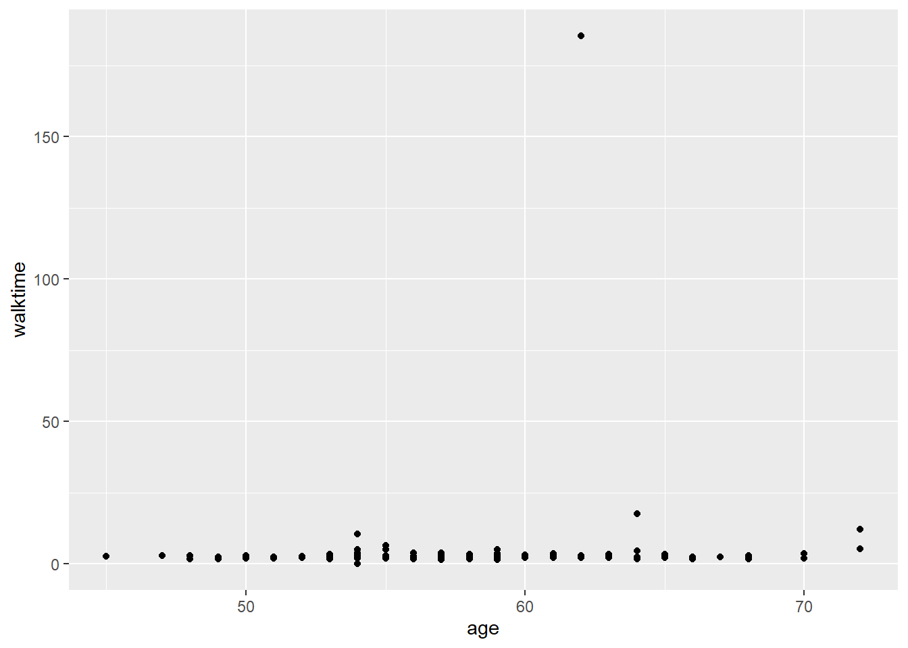
# Adorn the graph
ggplot(walkingdata) +
aes(x=age, y=walktime) +
geom_point() +
labs(x="Age (years)", y="Time (seconds)") +
scale_y_log10() +
facet_wrap(~sex) +
theme_bw()## Warning: Removed 1 rows containing missing values (geom_point).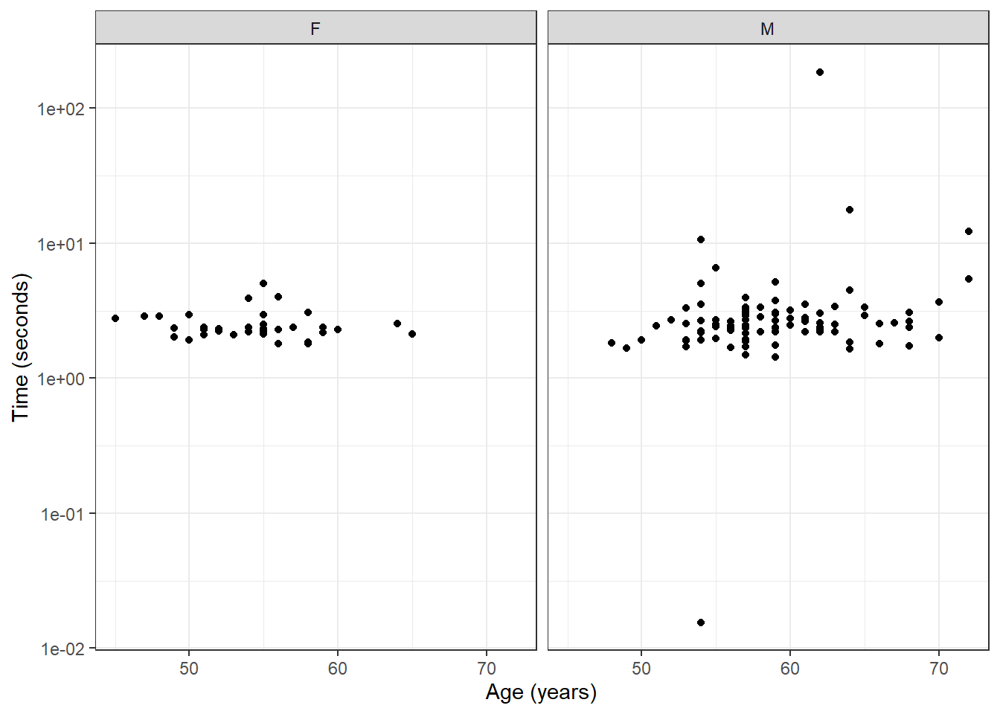
ggplot(walkingdata) +
aes(x=group, y=walktime) +
geom_boxplot() +
labs(x="Treatment group", y="Time (seconds)") +
scale_y_log10() +
facet_wrap(~sex) +
theme_bw()## Warning: Removed 1 rows containing non-finite values (stat_boxplot).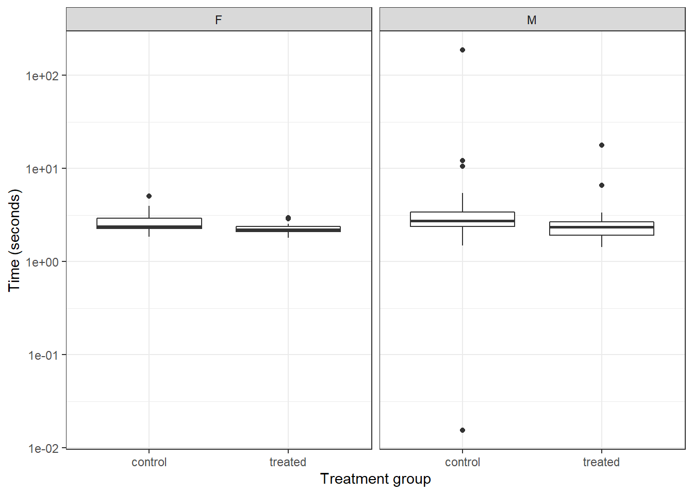
9 Clean data
# base
walkingdata$walktime[ walkingdata$walktime > 100 ] <- NA
walkingdata$walktime[ walkingdata$walktime < 0.1 ] <- NA
# data.table
walkingdata[ walktime>100 , walktime := NA]
walkingdata[ walktime<0.1 , walktime := NA]10 Simple tests
t.test( data = walkingdata , walktime ~ group)##
## Welch Two Sample t-test
##
## data: walktime by group
## t = 1.5788, df = 126.69, p-value = 0.1169
## alternative hypothesis: true difference in means between group control and group treated is not equal to 0
## 95 percent confidence interval:
## -0.1283567 1.1413738
## sample estimates:
## mean in group control mean in group treated
## 3.116183 2.609674ttest1 <- t.test( data = walkingdata , walktime ~ group)
ttest1$p.value## [1] 0.116880211 Model
lm1 <- lm( data = walkingdata , walktime ~ group)
summary(lm1)##
## Call:
## lm(formula = walktime ~ group, data = walkingdata)
##
## Residuals:
## Min 1Q Median 3Q Max
## -1.6223 -0.7297 -0.3963 0.0604 15.0317
##
## Coefficients:
## Estimate Std. Error t value Pr(>|t|)
## (Intercept) 3.1162 0.2257 13.806 <2e-16 ***
## grouptreated -0.5065 0.3204 -1.581 0.116
## ---
## Signif. codes: 0 '***' 0.001 '**' 0.01 '*' 0.05 '.' 0.1 ' ' 1
##
## Residual standard error: 1.848 on 131 degrees of freedom
## (3 observations deleted due to missingness)
## Multiple R-squared: 0.01872, Adjusted R-squared: 0.01123
## F-statistic: 2.499 on 1 and 131 DF, p-value: 0.1163confint(lm1)## 2.5 % 97.5 %
## (Intercept) 2.669671 3.5626939
## grouptreated -1.140358 0.127341112 Diagnose
plot(lm1)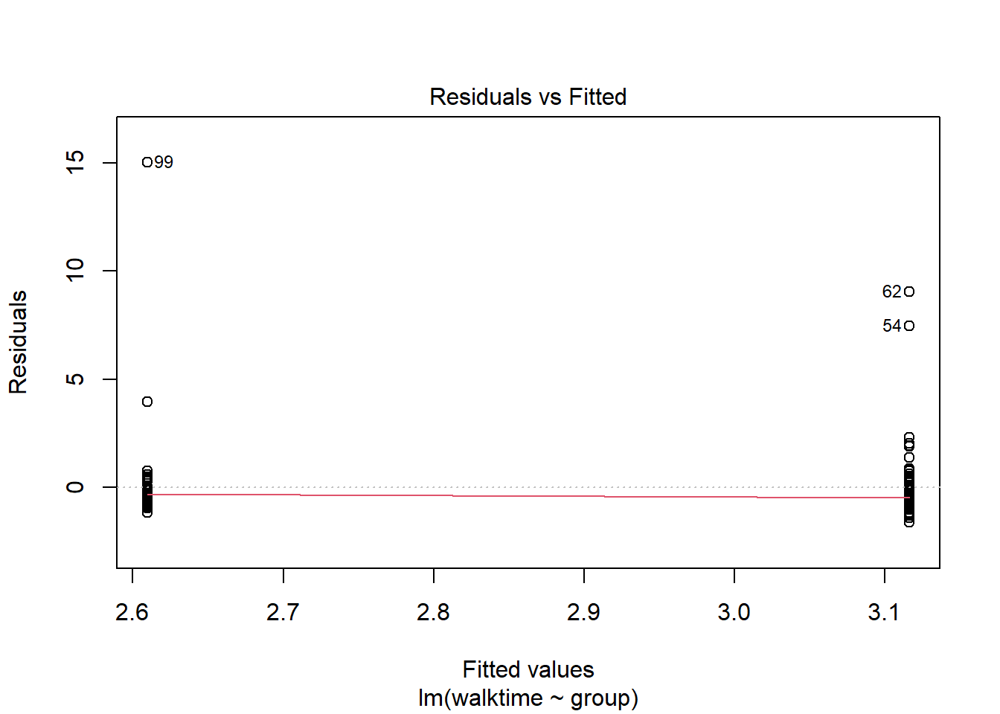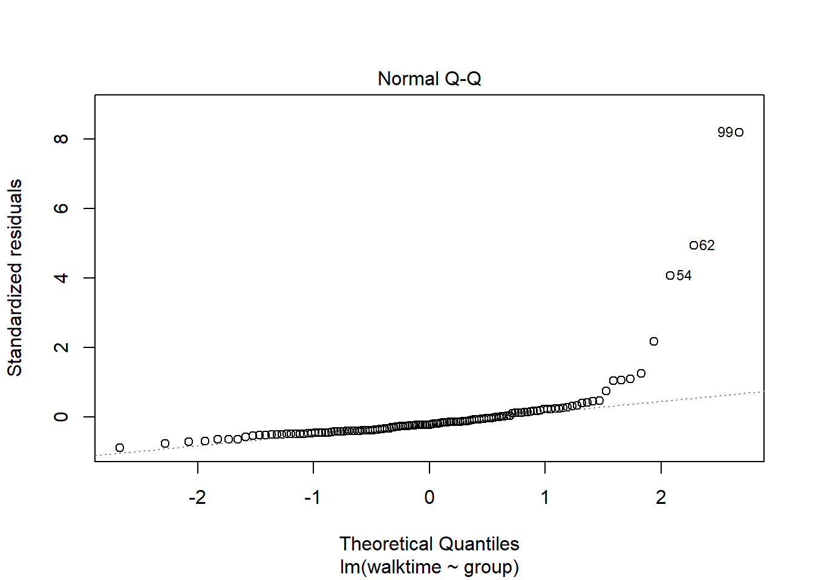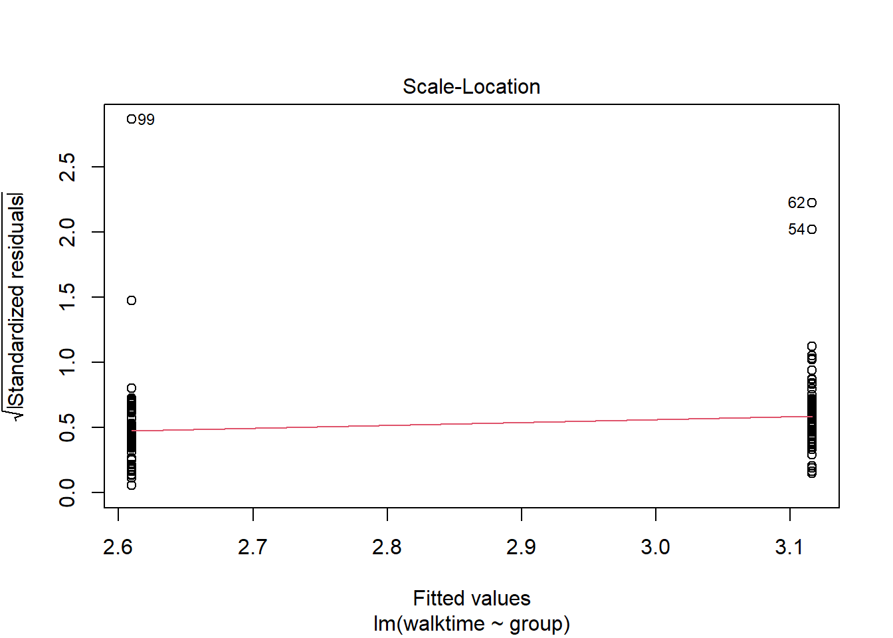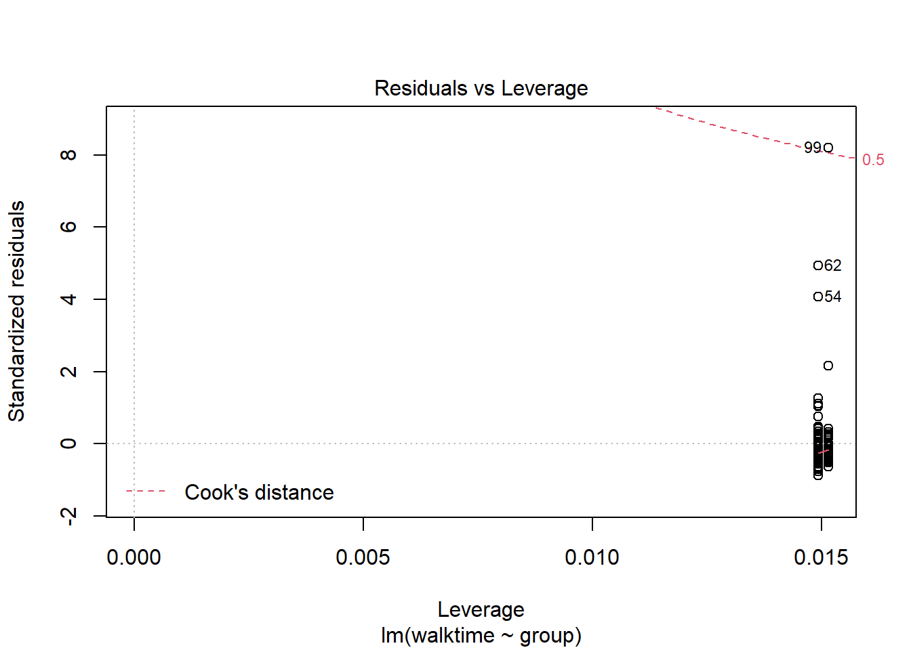
walkingdata[ , speed := 1/walktime]
lm2 <- lm( data = walkingdata , log(walktime) ~ group)
lm3 <- lm( data = walkingdata , 1/walktime ~ group)
plot(lm2)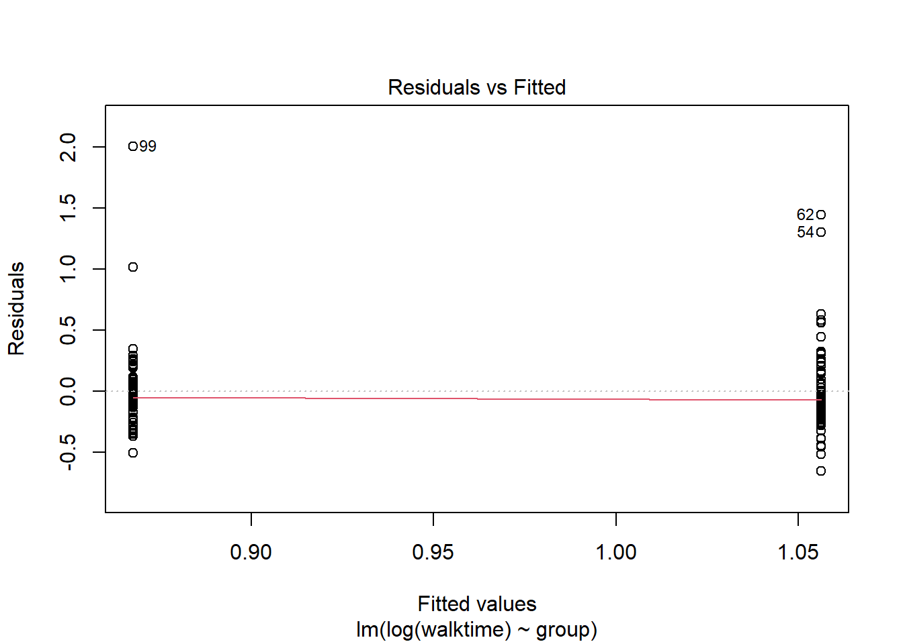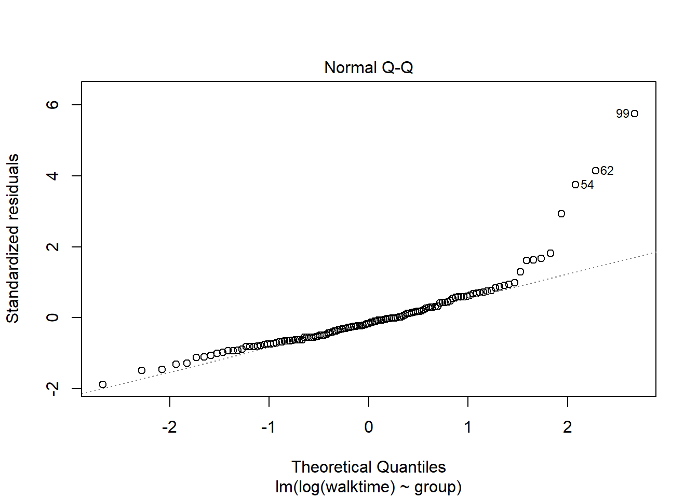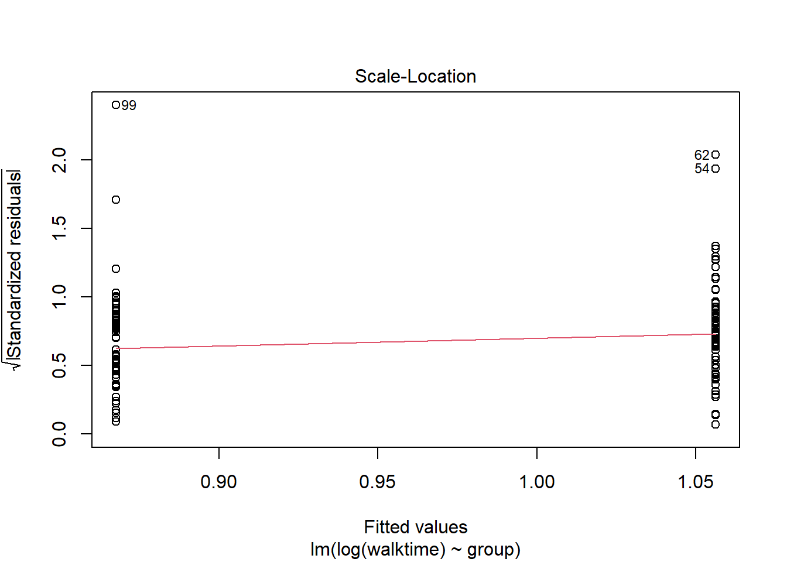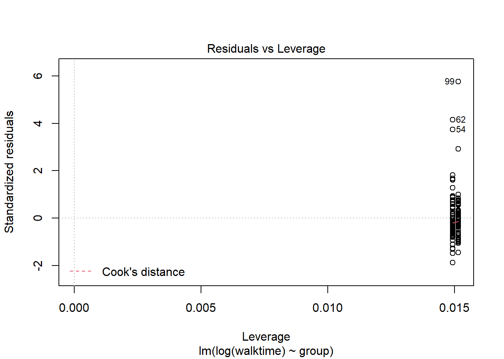
plot(lm3)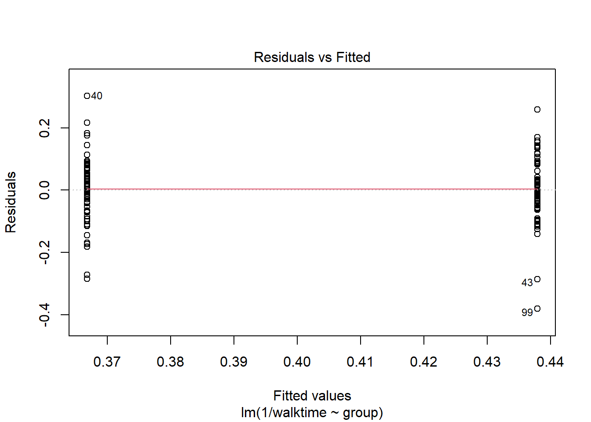
 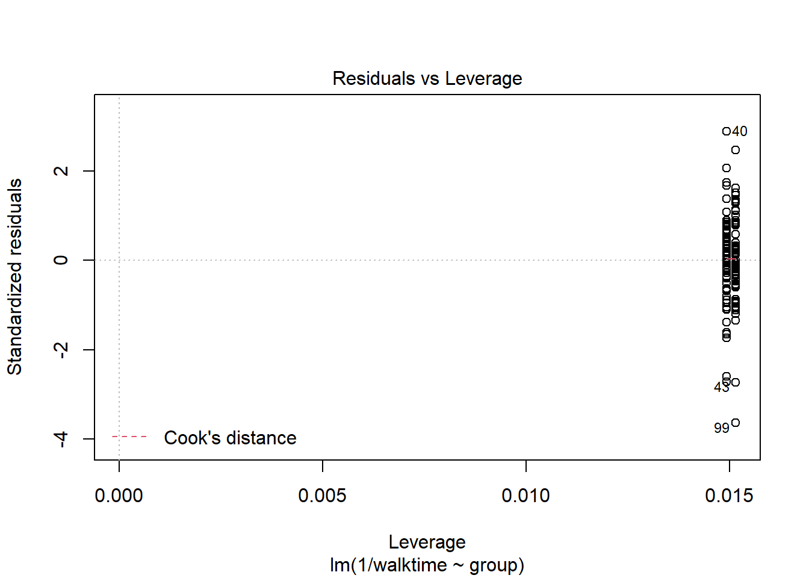
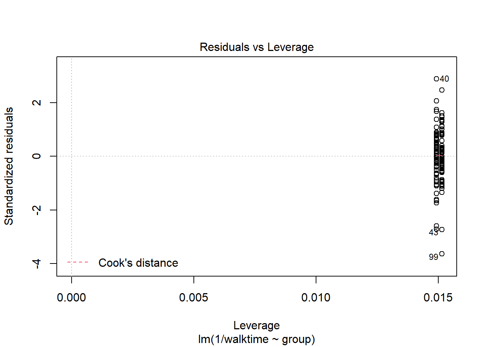
summary(lm3)##
## Call:
## lm(formula = 1/walktime ~ group, data = walkingdata)
##
## Residuals:
## Min 1Q Median 3Q Max
## -0.38121 -0.06170 0.00132 0.06453 0.30257
##
## Coefficients:
## Estimate Std. Error t value Pr(>|t|)
## (Intercept) 0.36681 0.01287 28.500 < 2e-16 ***
## grouptreated 0.07108 0.01827 3.891 0.000158 ***
## ---
## Signif. codes: 0 '***' 0.001 '**' 0.01 '*' 0.05 '.' 0.1 ' ' 1
##
## Residual standard error: 0.1053 on 131 degrees of freedom
## (3 observations deleted due to missingness)
## Multiple R-squared: 0.1036, Adjusted R-squared: 0.09674
## F-statistic: 15.14 on 1 and 131 DF, p-value: 0.0001583gtsummary::tbl_regression(lm3)| Characteristic | Beta | 95% CI1 | p-value |
|---|---|---|---|
| group | |||
| control | — | — | |
| treated | 0.07 | 0.03, 0.11 | <0.001 |
|
1
CI = Confidence Interval
|
|||
13 Augment model
lm4 <- lm( data = walkingdata , 1/walktime ~ group + age + sex + department)
gtsummary::tbl_regression(lm4)| Characteristic | Beta | 95% CI1 | p-value |
|---|---|---|---|
| group | |||
| control | — | — | |
| treated | 0.07 | 0.04, 0.11 | <0.001 |
| age | 0.00 | -0.01, 0.00 | 0.029 |
| sex | |||
| F | — | — | |
| M | -0.01 | -0.05, 0.03 | 0.6 |
| department | 0.02 | 0.00, 0.03 | 0.060 |
|
1
CI = Confidence Interval
|
|||
lm5 <- lm( data = walkingdata , 1/walktime ~ group + age + sex + factor(department))
gtsummary::tbl_regression(lm5)| Characteristic | Beta | 95% CI1 | p-value |
|---|---|---|---|
| group | |||
| control | — | — | |
| treated | 0.07 | 0.03, 0.11 | <0.001 |
| age | 0.00 | -0.01, 0.00 | 0.028 |
| sex | |||
| F | — | — | |
| M | -0.01 | -0.05, 0.04 | 0.7 |
| factor(department) | |||
| 1 | — | — | |
| 2 | -0.01 | -0.06, 0.04 | 0.7 |
| 3 | 0.04 | -0.01, 0.09 | 0.10 |
| 4 | 0.03 | -0.02, 0.08 | 0.2 |
|
1
CI = Confidence Interval
|
|||
anova(lm5 , update(lm5, . ~ . -age))## Analysis of Variance Table
##
## Model 1: 1/walktime ~ group + age + sex + factor(department)
## Model 2: 1/walktime ~ group + sex + factor(department)
## Res.Df RSS Df Sum of Sq F Pr(>F)
## 1 126 1.3190
## 2 127 1.3709 -1 -0.051897 4.9574 0.02776 *
## ---
## Signif. codes: 0 '***' 0.001 '**' 0.01 '*' 0.05 '.' 0.1 ' ' 114 Interactions
lm6 <- lm( data = walkingdata , 1/walktime ~ group*sex + age + factor(department))
gtsummary::tbl_regression(lm6)| Characteristic | Beta | 95% CI1 | p-value |
|---|---|---|---|
| group | |||
| control | — | — | |
| treated | 0.05 | -0.02, 0.12 | 0.14 |
| sex | |||
| F | — | — | |
| M | -0.02 | -0.08, 0.04 | 0.5 |
| age | 0.00 | -0.01, 0.00 | 0.029 |
| factor(department) | |||
| 1 | — | — | |
| 2 | -0.01 | -0.07, 0.04 | 0.6 |
| 3 | 0.04 | -0.01, 0.09 | 0.10 |
| 4 | 0.03 | -0.02, 0.08 | 0.2 |
| group * sex | |||
| treated * M | 0.03 | -0.05, 0.11 | 0.5 |
|
1
CI = Confidence Interval
|
|||
anova( lm5 , lm6 )## Analysis of Variance Table
##
## Model 1: 1/walktime ~ group + age + sex + factor(department)
## Model 2: 1/walktime ~ group * sex + age + factor(department)
## Res.Df RSS Df Sum of Sq F Pr(>F)
## 1 126 1.3190
## 2 125 1.3148 1 0.0042764 0.4066 0.5249library(emmeans)
emmeans(lm6, pairwise ~ group | sex)## $emmeans
## sex = F:
## group emmean SE df lower.CL upper.CL
## control 0.379 0.0246 125 0.330 0.428
## treated 0.430 0.0260 125 0.379 0.482
##
## sex = M:
## group emmean SE df lower.CL upper.CL
## control 0.359 0.0151 125 0.330 0.389
## treated 0.436 0.0150 125 0.407 0.466
##
## Results are averaged over the levels of: department
## Confidence level used: 0.95
##
## $contrasts
## sex = F:
## contrast estimate SE df t.ratio p.value
## control - treated -0.0513 0.0346 125 -1.481 0.1411
##
## sex = M:
## contrast estimate SE df t.ratio p.value
## control - treated -0.0771 0.0211 125 -3.654 0.0004
##
## Results are averaged over the levels of: departmenttreatmentestimates <- as.data.frame(confint(emmeans(lm6, pairwise ~ group | sex)$contrast))g1 <- ggplot(treatmentestimates) + aes(x=sex, y=estimate, ymin=lower.CL, ymax=upper.CL) +
geom_point() +
geom_errorbar(width=0.2) +
geom_hline(yintercept = 0) +
theme_bw() +
labs(x="Sex", y="Treatment effect")
g1 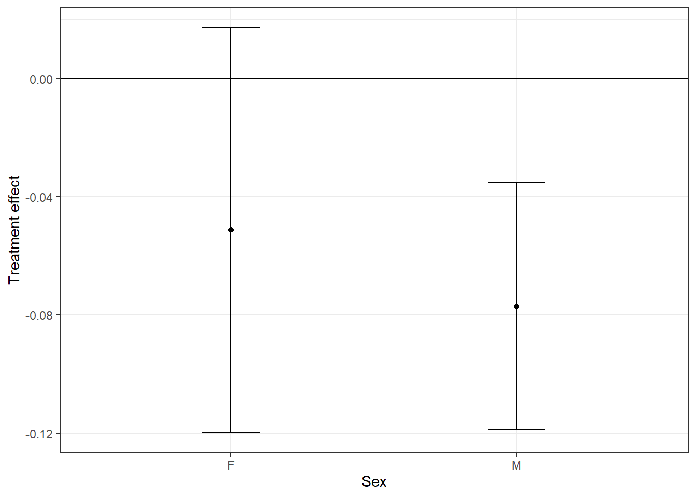
g1 + coord_flip()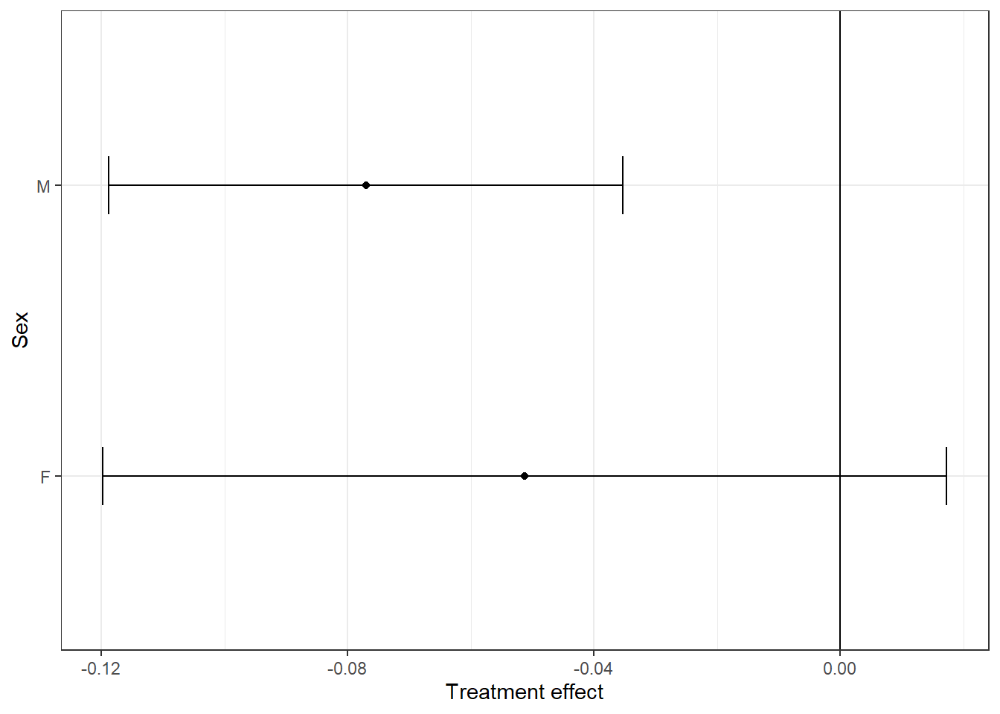